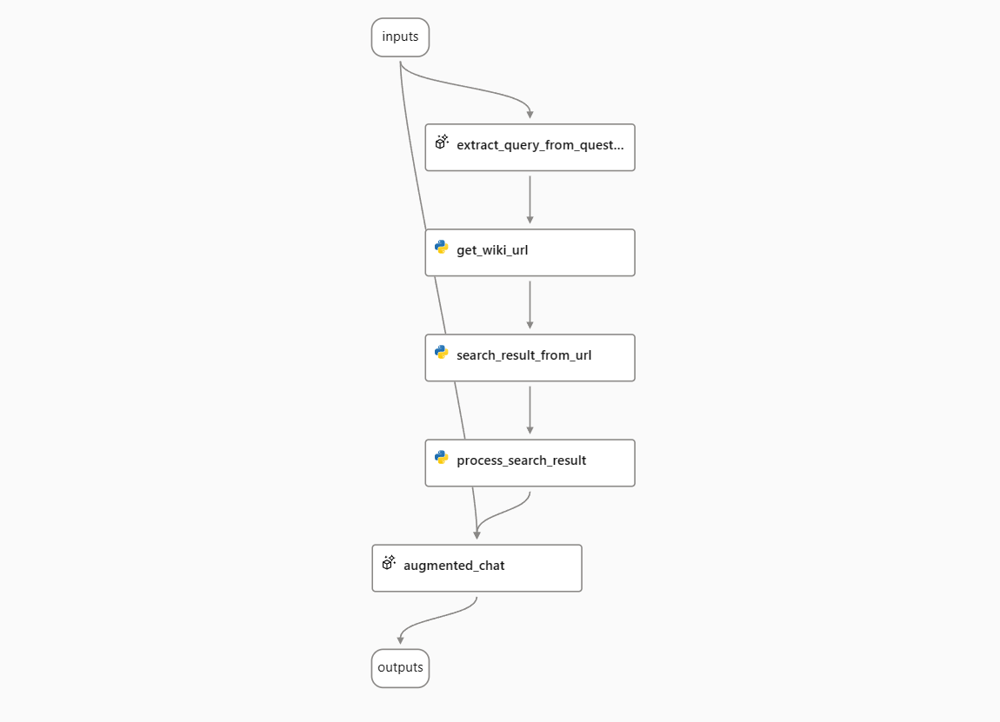
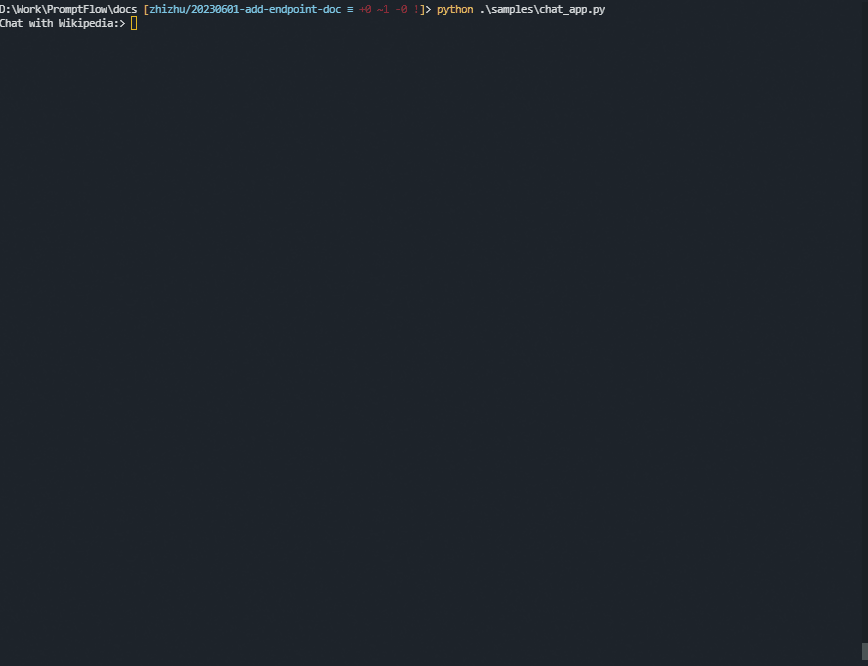
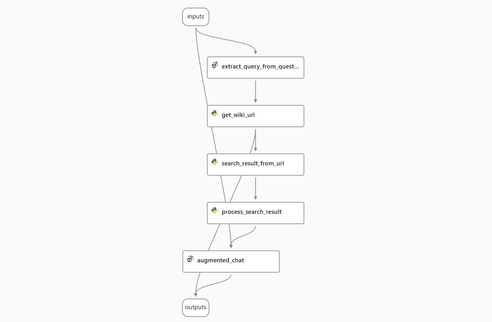

Use streaming endpoints deployed from prompt flow#
In prompt flow, you can deploy flow as REST endpoint for real-time inference.
When consuming the endpoint by sending a request, the default behavior is that the online endpoint will keep waiting until the whole response is ready, and then send it back to the client. This can cause a long delay for the client and a poor user experience.
To avoid this, you can use streaming when you consume the endpoints. Once streaming enabled, you don’t have to wait for the whole response ready. Instead, the server will send back the response in chunks as they are generated. The client can then display the response progressively, with less waiting time and more interactivity.
This article will describe the scope of streaming, how streaming works, and how to consume streaming endpoints.
Create a streaming enabled flow#
If you want to use the streaming mode, you need to create a flow that has a node that produces a string generator as the flow’s output. A string generator is an object that can return one string at a time when requested. You can use the following types of nodes to create a string generator:
LLM node: This node uses a large language model to generate natural language responses based on the input.
{# Sample prompt template for LLM node #} system: You are a helpful assistant. user: {{question}}
Python tools node: This node allows you to write custom Python code that can yield string outputs. You can use this node to call external APIs or libraries that support streaming. For example, you can use this code to echo the input word by word:
from promptflow import tool # Sample code echo input by yield in Python tool node @tool def my_python_tool(paragraph: str) -> str: yield "Echo: " for word in paragraph.split(): yield word + " "
In this guide, we will use the “Chat with Wikipedia” sample flow as an example. This flow processes the user’s question, searches Wikipedia for relevant articles, and answers the question with information from the articles. It uses streaming mode to show the progress of the answer generation.

Deploy the flow as an online endpoint#
To use the streaming mode, you need to deploy your flow as an online endpoint. This will allow you to send requests and receive responses from your flow in real time.
Follow this guide to deploy your flow as an online endpoint.
[!NOTE]
You can follow this document to deploy an online endpoint. Please deploy with runtime environment version later than version
20230816.v10. You can check your runtime version and update runtime in the run time detail page.
Understand the streaming process#
When you have an online endpoint, the client and the server need to follow specific principles for content negotiation to utilize the streaming mode:
Content negotiation is like a conversation between the client and the server about the preferred format of the data they want to send and receive. It ensures effective communication and agreement on the format of the exchanged data.
To understand the streaming process, consider the following steps:
First, the client constructs an HTTP request with the desired media type included in the
Acceptheader. The media type tells the server what kind of data format the client expects. It’s like the client saying, “Hey, I’m looking for a specific format for the data you’ll send me. It could be JSON, text, or something else.” For example,application/jsonindicates a preference for JSON data,text/event-streamindicates a desire for streaming data, and*/*means the client accepts any data format.[!NOTE]
If a request lacks an
Acceptheader or has emptyAcceptheader, it implies that the client will accept any media type in response. The server treats it as*/*.Next, the server responds based on the media type specified in the
Acceptheader. It’s important to note that the client may request multiple media types in theAcceptheader, and the server must consider its capabilities and format priorities to determine the appropriate response.First, the server checks if
text/event-streamis explicitly specified in theAcceptheader:For a stream-enabled flow, the server returns a response with a
Content-Typeoftext/event-stream, indicating that the data is being streamed.For a non-stream-enabled flow, the server proceeds to check for other media types specified in the header.
If
text/event-streamis not specified, the server then checks ifapplication/jsonor*/*is specified in theAcceptheader:In such cases, the server returns a response with a
Content-Typeofapplication/json, providing the data in JSON format.
If the
Acceptheader specifies other media types, such astext/html:The server returns a
424response with a PromptFlow runtime error codeUserErrorand a runtime HTTP status406, indicating that the server cannot fulfill the request with the requested data format.
Note: Please refer handle errors for details.
Finally, the client checks the
Content-Typeresponse header. If it is set totext/event-stream, it indicates that the data is being streamed.
Let’s take a closer look at how the streaming process works. The response data in streaming mode follows the format of server-sent events (SSE).
The overall process works as follows:
0. The client sends a message to the server.#
POST https://<your-endpoint>.inference.ml.azure.com/score
Content-Type: application/json
Authorization: Bearer <key or token of your endpoint>
Accept: text/event-stream
{
"question": "Hello",
"chat_history": []
}
[!NOTE]
The
Acceptheader is set totext/event-streamto request a stream response.
1. The server sends back the response in streaming mode.#
HTTP/1.1 200 OK
Content-Type: text/event-stream; charset=utf-8
Connection: close
Transfer-Encoding: chunked
data: {"answer": ""}
data: {"answer": "Hello"}
data: {"answer": "!"}
data: {"answer": " How"}
data: {"answer": " can"}
data: {"answer": " I"}
data: {"answer": " assist"}
data: {"answer": " you"}
data: {"answer": " today"}
data: {"answer": " ?"}
data: {"answer": ""}
Note that the Content-Type is set to text/event-stream; charset=utf-8, indicating the response is an event stream.
The client should decode the response data as server-sent events and display them incrementally. The server will close the HTTP connection after all the data is sent.
Each response event is the delta to the previous event. It is recommended for the client to keep track of the merged data in memory and send them back to the server as chat history in the next request.
2. The client sends another chat message, along with the full chat history, to the server.#
POST https://<your-endpoint>.inference.ml.azure.com/score
Content-Type: application/json
Authorization: Bearer <key or token of your endpoint>
Accept: text/event-stream
{
"question": "Glad to know you!",
"chat_history": [
{
"inputs": {
"question": "Hello"
},
"outputs": {
"answer": "Hello! How can I assist you today?"
}
}
]
}
3. The server sends back the answer in streaming mode.#
HTTP/1.1 200 OK
Content-Type: text/event-stream; charset=utf-8
Connection: close
Transfer-Encoding: chunked
data: {"answer": ""}
data: {"answer": "Nice"}
data: {"answer": " to"}
data: {"answer": " know"}
data: {"answer": " you"}
data: {"answer": " too"}
data: {"answer": "!"}
data: {"answer": " Is"}
data: {"answer": " there"}
data: {"answer": " anything"}
data: {"answer": " I"}
data: {"answer": " can"}
data: {"answer": " help"}
data: {"answer": " you"}
data: {"answer": " with"}
data: {"answer": "?"}
data: {"answer": ""}
4. The chat continues in a similar way.#
Handle errors#
The client should check the HTTP response code first. See this table for common error codes returned by online endpoints.
If the response code is “424 Model Error”, it means that the error is caused by the model’s code. The error response from a PromptFlow model always follows this format:
{
"error": {
"code": "UserError",
"message": "Media type text/event-stream in Accept header is not acceptable. Supported media type(s) - application/json",
}
}
It is always a JSON dictionary with only one key “error” defined.
The value for “error” is a dictionary, containing “code”, “message”.
“code” defines the error category. Currently, it may be “UserError” for bad user inputs and “SystemError” for errors inside the service.
“message” is a description of the error. It can be displayed to the end user.
How to consume the server-sent events#
Consume using Python#
We have created a utility file as an example to demonstrate how to consume the server-sent event. A sample usage would like:
try:
response = requests.post(url, json=body, headers=headers, stream=stream)
response.raise_for_status()
content_type = response.headers.get('Content-Type')
if "text/event-stream" in content_type:
event_stream = EventStream(response.iter_lines())
for event in event_stream:
# Handle event, i.e. print to stdout
else:
# Handle json response
except HTTPError:
# Handle exceptions
Consume using JavaScript#
There are several libraries to consume server-sent events in JavaScript. Here is one of them as an example.
A sample chat app using Python#
Here is a sample chat app written in Python. (Click here to view the source code.)

Advance usage - hybrid stream and non-stream flow output#
Sometimes, you may want to get both stream and non-stream results from a flow output. For example, in the “Chat with Wikipedia” flow, you may want to get not only LLM’s answer, but also the list of URLs that the flow searched. To do this, you need to modify the flow to output a combination of stream LLM’s answer and non-stream URL list.
In the sample “Chat With Wikipedia” flow, the output is connected to the LLM node augmented_chat. To add the URL list to the output, you need to add an output field with the name url and the value ${get_wiki_url.output}.

The output of the flow will be a non-stream field as the base and a stream field as the delta. Here is an example of request and response.
0. The client sends a message to the server.#
POST https://<your-endpoint>.inference.ml.azure.com/score
Content-Type: application/json
Authorization: Bearer <key or token of your endpoint>
Accept: text/event-stream
{
"question": "When was ChatGPT launched?",
"chat_history": []
}
1. The server sends back the answer in streaming mode.#
HTTP/1.1 200 OK
Content-Type: text/event-stream; charset=utf-8
Connection: close
Transfer-Encoding: chunked
data: {"url": ["https://en.wikipedia.org/w/index.php?search=ChatGPT", "https://en.wikipedia.org/w/index.php?search=GPT-4"]}
data: {"answer": ""}
data: {"answer": "Chat"}
data: {"answer": "G"}
data: {"answer": "PT"}
data: {"answer": " was"}
data: {"answer": " launched"}
data: {"answer": " on"}
data: {"answer": " November"}
data: {"answer": " "}
data: {"answer": "30"}
data: {"answer": ","}
data: {"answer": " "}
data: {"answer": "202"}
data: {"answer": "2"}
data: {"answer": "."}
data: {"answer": " \n\n"}
...
data: {"answer": "PT"}
data: {"answer": ""}
2. The client sends another chat message, along with the full chat history, to the server.#
POST https://<your-endpoint>.inference.ml.azure.com/score
Content-Type: application/json
Authorization: Bearer <key or token of your endpoint>
Accept: text/event-stream
{
"question": "When did OpenAI announce GPT-4? How long is it between these two milestones?",
"chat_history": [
{
"inputs": {
"question": "When was ChatGPT launched?"
},
"outputs": {
"url": [
"https://en.wikipedia.org/w/index.php?search=ChatGPT",
"https://en.wikipedia.org/w/index.php?search=GPT-4"
],
"answer": "ChatGPT was launched on November 30, 2022. \n\nSOURCES: https://en.wikipedia.org/w/index.php?search=ChatGPT"
}
}
]
}
3. The server sends back the answer in streaming mode.#
HTTP/1.1 200 OK
Content-Type: text/event-stream; charset=utf-8
Connection: close
Transfer-Encoding: chunked
data: {"url": ["https://en.wikipedia.org/w/index.php?search=Generative pre-trained transformer ", "https://en.wikipedia.org/w/index.php?search=Microsoft "]}
data: {"answer": ""}
data: {"answer": "Open"}
data: {"answer": "AI"}
data: {"answer": " released"}
data: {"answer": " G"}
data: {"answer": "PT"}
data: {"answer": "-"}
data: {"answer": "4"}
data: {"answer": " in"}
data: {"answer": " March"}
data: {"answer": " "}
data: {"answer": "202"}
data: {"answer": "3"}
data: {"answer": "."}
data: {"answer": " Chat"}
data: {"answer": "G"}
data: {"answer": "PT"}
data: {"answer": " was"}
data: {"answer": " launched"}
data: {"answer": " on"}
data: {"answer": " November"}
data: {"answer": " "}
data: {"answer": "30"}
data: {"answer": ","}
data: {"answer": " "}
data: {"answer": "202"}
data: {"answer": "2"}
data: {"answer": "."}
data: {"answer": " The"}
data: {"answer": " time"}
data: {"answer": " between"}
data: {"answer": " these"}
data: {"answer": " two"}
data: {"answer": " milestones"}
data: {"answer": " is"}
data: {"answer": " approximately"}
data: {"answer": " "}
data: {"answer": "3"}
data: {"answer": " months"}
data: {"answer": ".\n\n"}
...
data: {"answer": "Chat"}
data: {"answer": "G"}
data: {"answer": "PT"}
data: {"answer": ""}